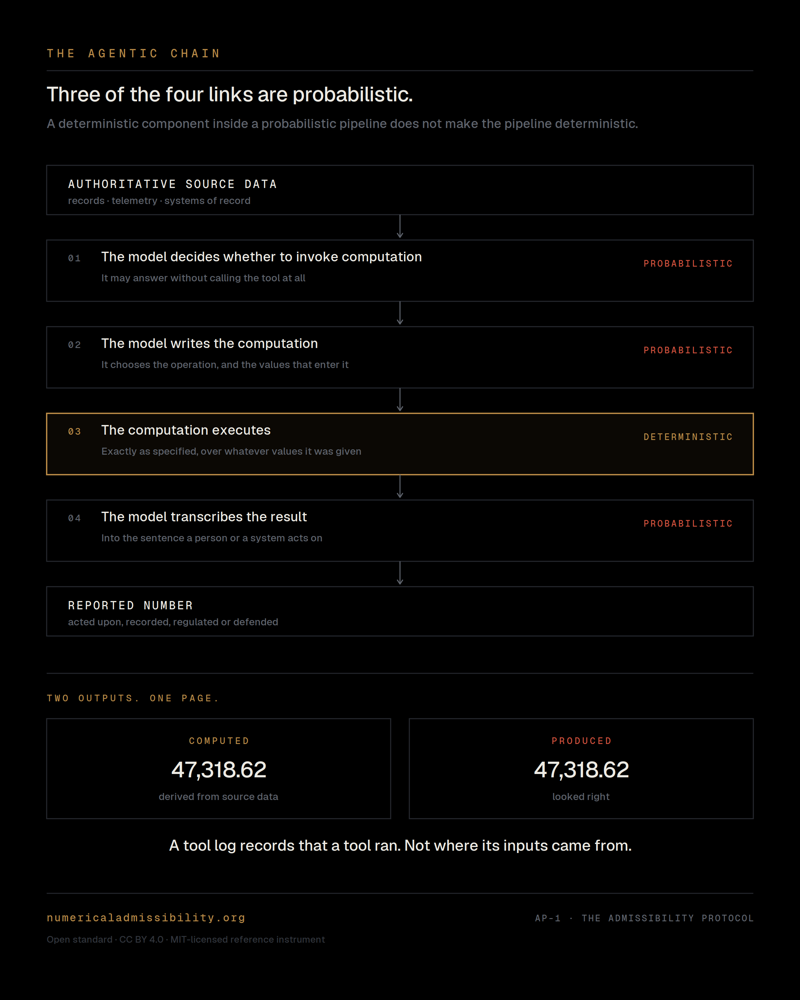
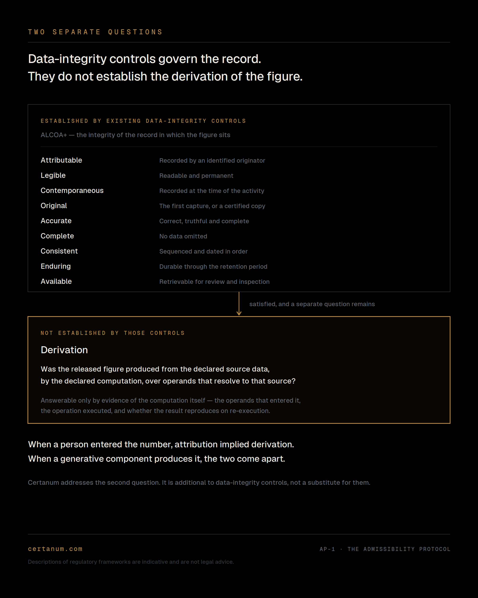

A computed figure and a fabricated figure are indistinguishable in text. Output inspection cannot separate them. A tool-call record establishes that a tool executed; it does not establish where the values entering it originated.
Certanum is being built to remove the generative component from the numerical path.
An agent is a probabilistic component deciding whether, when and with what inputs to invoke a deterministic one. The computation may be deterministic; the surrounding pipeline is not. A deterministic component inside a probabilistic pipeline does not make the pipeline deterministic.

The architecture is designed so that every operand has a resolved evidentiary origin: authoritative source data where the operand is source-derived, or a declared, immutable artifact at the model boundary where a model supplies an input. The declared computation is then independently re-executable. Provenance is established at the operand, not asserted at the output. The output is not the proof. The execution record is.
An operand that cannot be resolved does not degrade the answer. It withholds it. Refusal is a structural property of the architecture, not a policy applied to a model.
A model-produced artifact is evidence, not an authoritative source. It is identified and bound by digest so that what entered the computation can be established — never treated as an unexplained number.
Certanum does not certify the truth of the source data or the suitability of the domain logic. It establishes the derivation — what operands entered the computation, what operation was executed, and whether the released figure reproduces on re-execution.
The generative component is not certified. It is partitioned out of the numerical path — the pattern these regimes already apply to uncertified components. What remains in the path is conventional deterministic software, developable to the assurance bar the domain requires.
As AI systems increasingly invoke tools, supply inputs to deterministic calculations, and produce outputs relied upon in regulated and mission-critical environments, the requirement to evidence the numerical path stops being a research question and becomes an infrastructure one.
Certanum is building that layer.
Certanum asks institutions to rely on evidence rather than assurance. The same standard applies to the standard itself. Each of the following is published and independently inspectable.
AP-1 v1.2 in force. v1.3 draft open for public comment. CC BY 4.0, versioned and DOI-registered.
numericaladmissibility.org ↗
MIT-licensed, executable by any third party without the publisher's involvement.
github.com/zorrzai/ap1-run ↗
Pre-registered evaluation procedure: execution conditions, fixtures and analysis declared before the run.
osf.io/y97d8 ↗
Defects found in the instrument, published as errata on the publisher's own initiative, with the affected findings withdrawn.
Published in full ↗
A standard whose author declines to be measured by it is a brochure. The correction record exists because the instrument was applied to itself first.
The failure is structural rather than sectoral. It occurs wherever a statistical component supplies an operand to a deterministic calculation whose output is acted upon, recorded, regulated or defended — and wherever an existing regime already requires that figure to be evidenced, traceable, validated or reproducible.
Consequential calculation under model-risk control. Independent validation, record-keeping and declared accuracy.
Derived values, validation evidence, and traceability from a derived figure to its predecessor across regulated workflows.
Software assurance and traceability from requirement to implementation to verification evidence.
Reproducibility, traceability and evidence for AI-enabled decision systems under assurance obligation.
Engineering calculation and operational decision where numerical error carries physical or financial consequence.
The architecture is domain-neutral. The initial commercial focus is not.
Descriptions of regulatory obligations are indicative, are not legal advice, and should be confirmed with qualified counsel. Certanum confers compliance with nothing. It produces evidence an existing assurance, validation or audit process may require.
Generative AI is moving directly into pharmaceutical research, development and operational workflows. The evidentiary requirements around consequential derived values must therefore extend to the AI-computation boundary.
ALCOA+ establishes requirements for the integrity of the record. It does not, by itself, establish the derivation path of a consequential figure. A record can be attributable, contemporaneous, complete and retained while a separate question remains unanswered: was the reported figure derived from the declared source data, by the declared computation?
When a person entered the number, attribution implied derivation. When a generative component produces it, the two come apart. Certanum addresses that evidentiary boundary. It is additional to data-integrity controls, not a substitute for them.

Certanum is opening a single pilot slot for an initial clinical application of the numerical-admissibility methodology. Measurement work to date is in regulated financial services; the standard has not been applied in a clinical setting.
The partner defines a derivation path that carries consequence in their environment — from source observations through to a value that reaches a regulatory submission. Certanum constructs the fixture and executes the measurement against frontier systems.
The pilot runs within the partner's environment. No production integration is required and partner data need not leave that environment. The deliverable is a jointly published measurement and a named contribution to an open standard.
Sources: Bristol Myers Squibb Form 8-K, Q2 2026, filed with the U.S. Securities and Exchange Commission. Reuters, 18 September 2026. Novo Nordisk announcement, 16 September 2026. Certanum is not affiliated with, endorsed by, or connected to any company named above.
The measurement is open so the claim can be falsified. The system that satisfies it is not.
AP-1, the Admissibility Protocol, is an open standard for measuring whether a consequential figure produced by an AI system was computed, traceable, reproducible and refusable. Authored by Marcus Rupp, published by ZORRZ Financial Inc. under CC BY 4.0, with a reference instrument under MIT. Both are free, and applicable by any party to any system — including Certanum's own, without the publisher's involvement or consent.
Certanum is the proprietary architecture built to satisfy it.
Certanum does not control the standard and holds no certification, registry or accreditation role.
Advised by Tim Moss — thirty years in engineering leadership. Sony Santa Monica founding member; Google Stadia ML and Meta Oculus Studios. Production machine-learning systems serving over 100 million users.
Affiliations are shown for identification purposes only. Both joint Chief Technology Officer roles are held alongside primary employment under approved outside activity. No institutional endorsement is implied and none is sought.